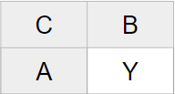
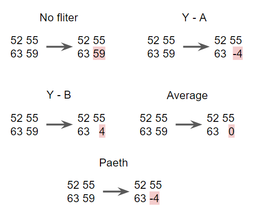
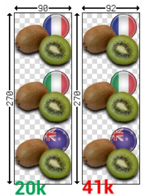

PNG is a widely-used image file format due to its lossless compression and support for transparency.
The compression contain two stages. First is the Filtering, then it achieves compression through the
DEFLATE algorithm, which combines LZ77 and Huffman coding techniques.
Filtering
 Filtering is a prediction algorithm for
each scan line of pixels to reduce the amount of data that needs to be compressed. It operates by encoding
with the relation to neighboring pixel, inculding left (A), overhead (B) and above-left (C) pixels.
Representing value differently from the previous value. If the data is linearly correlated, it result in lower values,
and improved compressibility.
 The value of Y is replaced by the differences
of actaul value and prediction. The computer will select the best filtering method out of five
which can product lowest number of unique symbols.
No filtering
Difference between Y and A
Difference between Y and B
Difference between Y and average of A & B
Linear function of A,B,C
DEFLATE
Deflate is smiliar to other compressors, for example, PKWARE, PKZIP, GZip.
Limitations of Deflate:
Maximum compression ratio is 1032 : 1
In a larger image, there is less matches, compression reslut in greater image size.
Overhead appear if there is less than 3 symbols in the match.

In the left is an example of DEFLATE algorithm. By changing the size from 90 to 92, the size of image have change.
The size grow from 20K to 41K which is 2 times larger. Differences of matches is the reason of this situation.
An insignificant change can result in a considerable effect on image size.